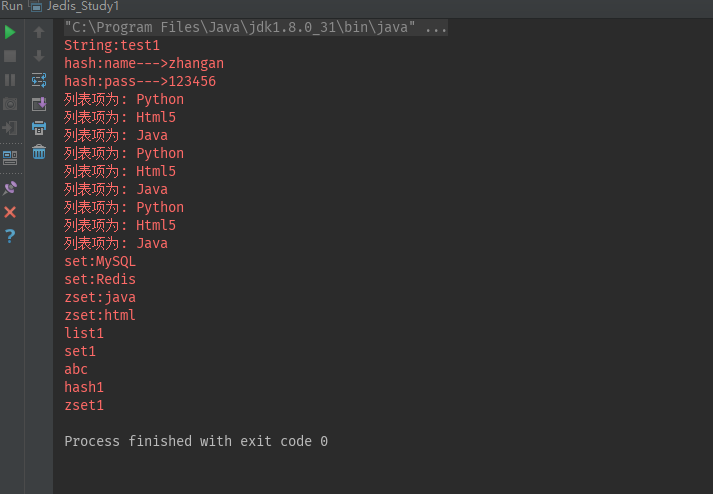

版本：
Jedis 2.9.0
java代码操作Redis，需要使用Jedis，也就是redis支持java的第三方类库 注意:Jedis2.7以上的版本才支持集群操作
创建Maven项目
pom文件：
xxxxxxxxxx<dependencies> <!--依赖Jedis--> <!-- https://mvnrepository.com/artifact/redis.clients/jedis --> <dependency> <groupId>redis.clients</groupId> <artifactId>jedis</artifactId> <version>2.9.0</version> </dependency> </dependencies>java代码：
x public static void main(String[] args) { Jedis jedis = new Jedis("10.211.55.12", 6379); //默认端口6379 可以省略 jedis.auth("lx"); //无密码此步可省略 //String操作 jedis.set("abc", "test1"); // 存数据 System.err.println("String:" + jedis.get("abc")); // 取数据 //hash操作 jedis.hset("hash1", "name", "zhangan"); jedis.hset("hash1", "pass", "123456"); Map<String, String> hash1 = jedis.hgetAll("hash1"); for(String s:hash1.keySet()){ System.err.println("hash:"+s+"--->"+hash1.get(s)); } //list操作 jedis.lpush("list1", "Java"); jedis.lpush("list1", "Html5"); jedis.lpush("list1", "Python"); // 获取存储的数据并输出 List<String> list = jedis.lrange("list1", 0, -1); for (int i = 0; i < list.size(); i++) { System.err.println("列表项为: " + list.get(i)); } //set操作 jedis.sadd("set1", "MySQL"); jedis.sadd("set1", "Redis"); Set<String> set1 = jedis.smembers("set1"); for (String s : set1) { System.err.println("set:" + s); } //zset操作 jedis.zadd("zset1",1.2,"java"); jedis.zadd("zset1",2.2,"html"); Set<String> set2=jedis.zrange("zset1",0,3); for(String s :set2){ System.err.println("zset:" + s); } //系统命令 Set<String> keys = jedis.keys("*"); Iterator<String> it = keys.iterator(); while (it.hasNext()) { String key = it.next(); System.err.println(key); } //事务相关操作 Long result= jedis.setnx("nxkey","nxvalue");//设置 key,value, 如果原先不存在对应可以,则设置成功并且返回1,否则返回0 jedis.watch("lock");//观察一个key,如果key的内容变化了,则当前连接的后续事务操作全部失败 Transaction transaction = jedis.multi();//开启事务,开启后的操作需要通过事务对象进行 transaction.decrBy("num",10);//返回值就是递减后的值 List<Object> list = transaction.exec();//这里返回前面所有操作的结果 jedis.unwatch();//取消观察所有的 key }显示结果

环境：
Idea
Maven 3.5
Spring/SpringMVC 4.3.11
MyBatis 3.4.4
创建数据库db_case,创建留言表
xxxxxxxxxx-- ------------------------------ Table structure for `tb_msg`-- ----------------------------DROP TABLE IF EXISTS `tb_msg`;CREATE TABLE `tb_msg` ( `id` int(11) NOT NULL AUTO_INCREMENT, `msg` varchar(50) NOT NULL, `name` varchar(20) NOT NULL, PRIMARY KEY (`id`)) ENGINE=InnoDB DEFAULT CHARSET=utf8;-- ------------------------------ Records of tb_msg-- ----------------------------pom文件
xxxxxxxxxx <project xmlns="http://maven.apache.org/POM/4.0.0" xmlns:xsi="http://www.w3.org/2001/XMLSchema-instance" xsi:schemaLocation="http://maven.apache.org/POM/4.0.0 http://maven.apache.org/maven-v4_0_0.xsd"> <modelVersion>4.0.0</modelVersion> <packaging>war</packaging> <name>SSM_Redis</name> <groupId>xph</groupId> <artifactId>SSM_Redis</artifactId> <version>1.0</version> <!--实现Spring+SpringMVC+MyBatis的整合 --> <dependencies> <!-- SpringMVC --> <dependency> <groupId>org.springframework</groupId> <artifactId>spring-webmvc</artifactId> <version>4.3.11.RELEASE</version> </dependency> <!--Spring Aspects --> <dependency> <groupId>org.springframework</groupId> <artifactId>spring-aspects</artifactId> <version>4.3.11.RELEASE</version> </dependency> <!--Spring ORM --> <dependency> <groupId>org.springframework</groupId> <artifactId>spring-orm</artifactId> <version>4.3.11.RELEASE</version> </dependency> <!-- https://mvnrepository.com/artifact/org.springframework/spring-context-support --> <dependency> <groupId>org.springframework</groupId> <artifactId>spring-context-support</artifactId> <version>4.3.11.RELEASE</version> </dependency> <!-- MyBatis --> <dependency> <groupId>org.mybatis</groupId> <artifactId>mybatis</artifactId> <version>3.4.2</version> </dependency> <!-- MyBatis和Spring的整合插件 --> <dependency> <groupId>org.mybatis</groupId> <artifactId>mybatis-spring</artifactId> <version>1.3.1</version> </dependency> <!-- MySQL驱动 --> <dependency> <groupId>mysql</groupId> <artifactId>mysql-connector-java</artifactId> <version>5.1.38</version> </dependency> <!-- 数据库连接池 --> <dependency> <groupId>com.alibaba</groupId> <artifactId>druid</artifactId> <version>1.1.2</version> </dependency> <!-- https://mvnrepository.com/artifact/javax.servlet/javax.servlet-api --> <dependency> <groupId>javax.servlet</groupId> <artifactId>javax.servlet-api</artifactId> <version>3.1.0</version> <scope>provided</scope> </dependency> <!-- https://mvnrepository.com/artifact/log4j/log4j --> <dependency> <groupId>log4j</groupId> <artifactId>log4j</artifactId> <version>1.2.17</version> </dependency> <!-- Jackson Json处理工具包 --> <dependency> <groupId>com.fasterxml.jackson.core</groupId> <artifactId>jackson-databind</artifactId> <version>2.9.2</version> </dependency> <!--Spring 操作Redis--> <dependency> <groupId>org.springframework.data</groupId> <artifactId>spring-data-redis</artifactId> <version>1.7.2.RELEASE</version> <exclusions> <exclusion> <groupId>org.springframework</groupId> <artifactId>spring-aop</artifactId> </exclusion> <exclusion> <groupId>org.springframework</groupId> <artifactId>spring-orm</artifactId> </exclusion> </exclusions> </dependency> <!-- https://mvnrepository.com/artifact/redis.clients/jedis --> <dependency> <groupId>redis.clients</groupId> <artifactId>jedis</artifactId> <version>2.9.0</version> </dependency> <!-- https://mvnrepository.com/artifact/com.alibaba/fastjson --> <dependency> <groupId>com.alibaba</groupId> <artifactId>fastjson</artifactId> <version>1.2.40</version> </dependency> <!-- https://mvnrepository.com/artifact/org.slf4j/slf4j-api --> <dependency> <groupId>org.slf4j</groupId> <artifactId>slf4j-api</artifactId> <version>1.7.25</version> </dependency> </dependencies> <build> <plugins> <!-- java编译插件 --> <plugin> <groupId>org.apache.maven.plugins</groupId> <artifactId>maven-compiler-plugin</artifactId> <version>3.6.0</version> <configuration> <source>1.8</source> <target>1.8</target> <encoding>UTF-8</encoding> </configuration> </plugin> </plugins> <resources> <resource> <!--需要打包的目录--> <directory>src/main/java</directory> <!--目录中的文件类型--> <includes> <include>**/*.xml</include> <include>**/*.properties</include> </includes> </resource> <resource> <!--需要打包的目录--> <directory>src/main/resources</directory> <!--目录中的文件类型--> <includes> <include>**/*.xml</include> <include>**/*.properties</include> </includes> </resource> </resources> </build></project>配置文件：
dbconfig.properties 数据库配置文件
xxxxxxxxxxjdbc.driver=com.mysql.jdbc.Driverjdbc.url=jdbc:mysql://10.211.55.12:3306/db_case?characterEncoding=UTF-8jdbc.username=rootjdbc.password=lxlog4j.properties 日志配置
xxxxxxxxxx### Global logging configurationlog4j.rootLogger=DEBUG, stdout### Uncomment for MyBatis logginglog4j.logger.org.apache.ibatis=DEBUG ### Console output...log4j.appender.stdout=org.apache.log4j.ConsoleAppenderlog4j.appender.stdout.layout=org.apache.log4j.PatternLayoutlog4j.appender.stdout.layout.ConversionPattern=%5p [%t] - %m%nredis.properties Redis数据库的配置文件
xxxxxxxxxx#访问地址redis.host=10.211.55.12#访问端口redis.port=6379 #注意，如果没有password，此处不设置值，但这一项要保留redis.password=lx#最大空闲数，数据库连接的最大空闲时间。超过空闲时间，数据库连接将被标记为不可用，然后被释放。设为0表示无限制。redis.maxIdle=300 #连接池的最大数据库连接数。设为0表示无限制redis.maxActive=600 #最大建立连接等待时间。如果超过此时间将接到异常。设为-1表示无限制。redis.maxWait=1000 #在borrow一个jedis实例时，是否提前进行alidate操作；如果为true，则得到的jedis实例均是可用的；redis.testOnBorrow=true spring-dao.xml Spring持久层的配置
xxxxxxxxxx <beans xmlns="http://www.springframework.org/schema/beans" xmlns:xsi="http://www.w3.org/2001/XMLSchema-instance" xmlns:context="http://www.springframework.org/schema/context" xsi:schemaLocation="http://www.springframework.org/schema/beans http://www.springframework.org/schema/beans/spring-beans.xsd http://www.springframework.org/schema/context http://www.springframework.org/schema/context/spring-context.xsd"> <!--1、引用外部的配置文件 --> <context:property-placeholder location="classpath:*.properties" /> <!--2、配置数据库连接池 --> <bean id="dataSource" class="com.alibaba.druid.pool.DruidDataSource" init-method="init" destroy-method="close"> <!-- 基本属性 url、user、password --> <property name="driverClassName" value="${jdbc.driver}"/> <property name="url" value="${jdbc.url}"/> <property name="username" value="${jdbc.username}"/> <property name="password" value="${jdbc.password}"/> <!-- 配置监控统计拦截的filters --> <property name="filters" value="stat"/> <!-- 配置初始化大小、最小、最大 --> <property name="maxActive" value="20"/> <property name="initialSize" value="1"/> <property name="minIdle" value="1"/> <!-- 配置获取连接等待超时的时间 --> <property name="maxWait" value="60000"/> <!-- 配置间隔多久才进行一次检测，检测需要关闭的空闲连接，单位是毫秒 --> <property name="timeBetweenEvictionRunsMillis" value="60000"/> <!-- 配置一个连接在池中最小生存的时间，单位是毫秒 --> <property name="minEvictableIdleTimeMillis" value="300000"/> <property name="testWhileIdle" value="true"/> <property name="testOnBorrow" value="false"/> <property name="testOnReturn" value="false"/> <!-- 打开PSCache，并且指定每个连接上PSCache的大小 --> <property name="poolPreparedStatements" value="true"/> <property name="maxOpenPreparedStatements" value="20"/> </bean> <!--3、配置SessionFactory --> <bean id="sessionFactory" class="org.mybatis.spring.SqlSessionFactoryBean"> <!--1、配置数据库连接池 --> <property name="dataSource" ref="dataSource"></property> </bean> <!-- 4、注入DAO对象：配置mapper MapperFactoryBean：用于生成mapper代理对象 --> <bean class="org.mybatis.spring.mapper.MapperScannerConfigurer"> <!-- 使用sqlSessionFactoryBeanName --> <property name="sqlSessionFactoryBeanName" value="sessionFactory"/> <!-- 配置扫描包的路径 如果要扫描多个包，中间使用半角逗号分隔 --> <property name="basePackage" value="com.qf.mapper"/> </bean></beans>spring-redis.xml Spring基于Redis的配置
xxxxxxxxxx <beans xmlns="http://www.springframework.org/schema/beans" xmlns:xsi="http://www.w3.org/2001/XMLSchema-instance" xsi:schemaLocation="http://www.springframework.org/schema/beans http://www.springframework.org/schema/beans/spring-beans.xsd"> <!--1、配置Redis连接池--> <!--（1）如果你有多个数据源需要通过<context:property-placeholder管理，且不愿意放在一个配置文件里，那么一定要加上ignore-unresolvable=“true"--> <!--（2）注意新版的（具体从哪个版本开始不清楚，有兴趣可以查一下）JedisPoolConfig的property name，不是maxActive而是maxTotal，而且没有maxWait属性，建议看一下Jedis源码。--> <!-- redis连接池 --> <bean id="jedisConfig" class="redis.clients.jedis.JedisPoolConfig"> <property name="maxTotal" value="${redis.maxActive}"></property> <property name="maxIdle" value="${redis.maxIdle}"></property> <property name="maxWaitMillis" value="${redis.maxWait}"></property> <property name="testOnBorrow" value="${redis.testOnBorrow}"></property> </bean> <!-- 2、redis连接工厂 --> <bean id="connectionFactory" class="org.springframework.data.redis.connection.jedis.JedisConnectionFactory"> <property name="hostName" value="${redis.host}"></property> <property name="port" value="${redis.port}"></property> <property name="password" value="${redis.password}"></property> <property name="poolConfig" ref="jedisConfig"></property> </bean> <!-- 3、redis操作模板，这里采用尽量面向对象的模板 --> <bean id="redisTemplate" class="org.springframework.data.redis.core.StringRedisTemplate"> <property name="connectionFactory" ref="connectionFactory"/> <property name="keySerializer" > <bean class="org.springframework.data.redis.serializer.StringRedisSerializer" /> </property> <property name="valueSerializer" > <bean class="org.springframework.data.redis.serializer.GenericJackson2JsonRedisSerializer" /> </property> <property name="hashKeySerializer"> <bean class="org.springframework.data.redis.serializer.StringRedisSerializer"/> </property> <property name="hashValueSerializer"> <bean class="org.springframework.data.redis.serializer.GenericJackson2JsonRedisSerializer"/> </property> <!--开启事务--> <property name="enableTransactionSupport" value="true"/> </bean> <!--4、配置Redis的工具类，自定义--> <bean id="redisUtil" class="com.qf.utils.RedisUtil"> <property name="redisTemplate" ref="redisTemplate"></property> </bean></beans>spring-service.xml Spring基于业务逻辑层的配置
xxxxxxxxxx <beans xmlns="http://www.springframework.org/schema/beans" xmlns:xsi="http://www.w3.org/2001/XMLSchema-instance" xmlns:context="http://www.springframework.org/schema/context" xmlns:tx="http://www.springframework.org/schema/tx" xsi:schemaLocation="http://www.springframework.org/schema/beans http://www.springframework.org/schema/beans/spring-beans.xsd http://www.springframework.org/schema/context http://www.springframework.org/schema/context/spring-context.xsd http://www.springframework.org/schema/tx http://www.springframework.org/schema/tx/spring-tx.xsd"> <import resource="classpath:/spring/spring-dao.xml"></import> <import resource="classpath:/spring/spring-redis.xml"></import> <!--1、Spring IOC扫描 --> <context:component-scan base-package="com.qf.service"></context:component-scan> <!--2、配置事务管理器 --> <bean id="txManager" class="org.springframework.jdbc.datasource.DataSourceTransactionManager"> <property name="dataSource" ref="dataSource"></property> </bean> <!--3、事务注解--> <tx:annotation-driven transaction-manager="txManager"/></beans>springMVC.xml SpringMVC的配置，webMVC
xxxxxxxxxx <beans xmlns="http://www.springframework.org/schema/beans" xmlns:mvc="http://www.springframework.org/schema/mvc" xmlns:xsi="http://www.w3.org/2001/XMLSchema-instance" xmlns:context="http://www.springframework.org/schema/context" xsi:schemaLocation=" http://www.springframework.org/schema/beans http://www.springframework.org/schema/beans/spring-beans.xsd http://www.springframework.org/schema/mvc http://www.springframework.org/schema/mvc/spring-mvc.xsd http://www.springframework.org/schema/context http://www.springframework.org/schema/context/spring-context.xsd"> <!--注解式实现控制器 --> <context:component-scan base-package="com.qf.controller"></context:component-scan> <mvc:annotation-driven></mvc:annotation-driven> <mvc:default-servlet-handler></mvc:default-servlet-handler> <!--配置所有页面的前缀和后缀 --> <bean id="viewResolver" class="org.springframework.web.servlet.view.InternalResourceViewResolver"> <!--配置页面的前缀 --> <!-- <property name="prefix" value="/WEB-INF/jsp/"></property> --> <!--配置后缀 --> <property name="suffix" value=".jsp"></property> </bean> <!-- 静态资源 解析 --> <mvc:resources location="/js/" mapping="/js/**" /></beans>web.xml 网站的配置
xxxxxxxxxx <web-app xmlns:xsi="http://www.w3.org/2001/XMLSchema-instance" xmlns="http://java.sun.com/xml/ns/javaee" xsi:schemaLocation="http://java.sun.com/xml/ns/javaee http://java.sun.com/xml/ns/javaee/web-app_2_5.xsd" version="2.5"> <display-name>M_SSM_Base</display-name> <!--Spring的配置文件 --> <context-param> <param-name>contextConfigLocation</param-name> <param-value>classpath:spring/spring-service.xml</param-value> </context-param> <!--Spring的监听器 --> <listener> <listener-class>org.springframework.web.context.ContextLoaderListener</listener-class> </listener> <!--SpringMVC的前端控制器 --> <servlet> <servlet-name>springMVC</servlet-name> <servlet-class>org.springframework.web.servlet.DispatcherServlet</servlet-class> <init-param> <param-name>contextConfigLocation</param-name> <param-value>classpath:spring/springMVC.xml</param-value> </init-param> </servlet> <servlet-mapping> <servlet-name>springMVC</servlet-name> <url-pattern>/</url-pattern> </servlet-mapping> <welcome-file-list> <welcome-file>redis_msg.html</welcome-file> </welcome-file-list></web-app>Msg 数据库表tb_msg的映射类
xxxxxxxxxxpackage com.qf.domain;public class Msg { private Long id; private String msg; private String name; public Long getId() { return id; } public String getMsg() { return msg; } public String getName() { return name; } public void setId(Long id) { this.id = id; } public void setMsg(String msg) { this.msg = msg; } public void setName(String name) { this.name = name; } public String toString() { return "Msg{" + "id=" + id + ", msg='" + msg + '\'' + ", name='" + name + '\'' + '}'; }}MsgMapper 持久层接口，基于MyBatis
xxxxxxxxxxpublic interface MsgMapper { //新增 int add(Msg msg); //查询所有 List<Msg> queryAll();}MsgMapper.xml 持久层接口对应的映射文件
xxxxxxxxxx<?xml version="1.0" encoding="UTF-8"?><!--加载映射文件的约束文档--><!DOCTYPE mapper PUBLIC "-//mybatis.org//DTD Mapper 3.0//EN" "http://mybatis.org/dtd/mybatis-3-mapper.dtd"><!--设置映射配置 namespace：实现的接口的全称--><mapper namespace="com.qf.mapper.MsgMapper"> <insert id="add" parameterType="com.qf.domain.Msg" useGeneratedKeys="true" keyProperty="id"> insert into tb_msg(msg,name) values(#{msg},#{name}) </insert> <!-- 查询 resultType:查询结果集的每行的数据类型 --> <select id="queryAll" resultType="com.qf.domain.Msg"> select * from tb_msg </select></mapper>MsgService 业务逻辑层的类
xxxxxxxxxxpublic class MsgService { private MsgMapper mapper; private RedisUtil redisUtil; //保存 public boolean save(Msg msg) throws JsonProcessingException { boolean res=mapper.add(msg)>0?true:false; if(res){ //让Redis中的数据进行失效 redisUtil.expire("msgs",0); } return res; } //查询 public List<Msg> queryAll(){ List<Msg> msgs; //获取Redis中的数据 List<Object> list=redisUtil.lGet("msgs",0,-1); //验证Redis中是否存在数据 if(list!=null && list.size()>0){ msgs= JSON.parseArray(list.get(0).toString(),Msg.class); }else{//不存在数据就去数据库查询，并将数据存储在Redis中 msgs= mapper.queryAll(); redisUtil.lSet("msgs",JSON.toJSONString(msgs)); } return msgs; }}MsgController 控制器类
xxxxxxxxxxpublic class MsgController { private MsgService service; //新增数据 ("/msg.add") public void add(Msg msg, HttpServletResponse response) throws IOException { response.getWriter().print(service.save(msg)); } //查询数据 ("/msg.query") public List<Msg> queryAll(){ System.err.println(service.queryAll()); return service.queryAll(); }}RedisUtil 工具类，Redis的常用操作的工具类
xxxxxxxxxxpublic class RedisUtil { private RedisTemplate<String, Object> redisTemplate; public void setRedisTemplate(RedisTemplate<String, Object> redisTemplate) { this.redisTemplate = redisTemplate; }//=============================common============================ /** * 指定缓存失效时间 * @param key 键 * @param time 时间(秒) * @return */ public boolean expire(String key,long time){ try { //if(time>0){ redisTemplate.expire(key, time, TimeUnit.SECONDS); //} return true; } catch (Exception e) { e.printStackTrace(); return false; } } /** * 根据key 获取过期时间 * @param key 键 不能为null * @return 时间(秒) 返回0代表为永久有效 */ public long getExpire(String key){ return redisTemplate.getExpire(key,TimeUnit.SECONDS); } /** * 判断key是否存在 * @param key 键 * @return true 存在 false不存在 */ public boolean hasKey(String key){ try { return redisTemplate.hasKey(key); } catch (Exception e) { e.printStackTrace(); return false; } } /** * 删除缓存 * @param key 可以传一个值 或多个 */ ("unchecked") public void del(String ... key){ if(key!=null&&key.length>0){ if(key.length==1){ redisTemplate.delete(key[0]); }else{ redisTemplate.delete(CollectionUtils.arrayToList(key)); } } } //============================String============================= /** * 普通缓存获取 * @param key 键 * @return 值 */ public Object get(String key){ return key==null?null:redisTemplate.opsForValue().get(key); } /** * 普通缓存放入 * @param key 键 * @param value 值 * @return true成功 false失败 */ public boolean set(String key,Object value) { try { redisTemplate.opsForValue().set(key, value); return true; } catch (Exception e) { e.printStackTrace(); return false; } } /** * 普通缓存放入并设置时间 * @param key 键 * @param value 值 * @param time 时间(秒) time要大于0 如果time小于等于0 将设置无限期 * @return true成功 false 失败 */ public boolean set(String key,Object value,long time){ try { if(time>0){ redisTemplate.opsForValue().set(key, value, time, TimeUnit.SECONDS); }else{ set(key, value); } return true; } catch (Exception e) { e.printStackTrace(); return false; } } /** * 递增 * @param key 键 * @param delta 要增加几(大于0) * @return */ public long incr(String key, long delta){ if(delta<0){ throw new RuntimeException("递增因子必须大于0"); } return redisTemplate.opsForValue().increment(key, delta); } /** * 递减 * @param key 键 * @param delta 要减少几(小于0) * @return */ public long decr(String key, long delta){ if(delta<0){ throw new RuntimeException("递减因子必须大于0"); } return redisTemplate.opsForValue().increment(key, -delta); } //================================Map================================= /** * HashGet * @param key 键 不能为null * @param item 项 不能为null * @return 值 */ public Object hget(String key,String item){ return redisTemplate.opsForHash().get(key, item); } /** * 获取hashKey对应的所有键值 * @param key 键 * @return 对应的多个键值 */ public Map<Object,Object> hmget(String key){ return redisTemplate.opsForHash().entries(key); } /** * HashSet * @param key 键 * @param map 对应多个键值 * @return true 成功 false 失败 */ public boolean hmset(String key, Map<String,Object> map){ try { redisTemplate.opsForHash().putAll(key, map); return true; } catch (Exception e) { e.printStackTrace(); return false; } } /** * HashSet 并设置时间 * @param key 键 * @param map 对应多个键值 * @param time 时间(秒) * @return true成功 false失败 */ public boolean hmset(String key, Map<String,Object> map, long time){ try { redisTemplate.opsForHash().putAll(key, map); if(time>0){ expire(key, time); } return true; } catch (Exception e) { e.printStackTrace(); return false; } } /** * 向一张hash表中放入数据,如果不存在将创建 * @param key 键 * @param item 项 * @param value 值 * @return true 成功 false失败 */ public boolean hset(String key,String item,Object value) { try { redisTemplate.opsForHash().put(key, item, value); return true; } catch (Exception e) { e.printStackTrace(); return false; } } /** * 向一张hash表中放入数据,如果不存在将创建 * @param key 键 * @param item 项 * @param value 值 * @param time 时间(秒) 注意:如果已存在的hash表有时间,这里将会替换原有的时间 * @return true 成功 false失败 */ public boolean hset(String key,String item,Object value,long time) { try { redisTemplate.opsForHash().put(key, item, value); if(time>0){ expire(key, time); } return true; } catch (Exception e) { e.printStackTrace(); return false; } } /** * 删除hash表中的值 * @param key 键 不能为null * @param item 项 可以使多个 不能为null */ public void hdel(String key, Object... item){ redisTemplate.opsForHash().delete(key,item); } /** * 判断hash表中是否有该项的值 * @param key 键 不能为null * @param item 项 不能为null * @return true 存在 false不存在 */ public boolean hHasKey(String key, String item){ return redisTemplate.opsForHash().hasKey(key, item); } /** * hash递增 如果不存在,就会创建一个 并把新增后的值返回 * @param key 键 * @param item 项 * @param by 要增加几(大于0) * @return */ public double hincr(String key, String item,double by){ return redisTemplate.opsForHash().increment(key, item, by); } /** * hash递减 * @param key 键 * @param item 项 * @param by 要减少记(小于0) * @return */ public double hdecr(String key, String item,double by){ return redisTemplate.opsForHash().increment(key, item,-by); } //============================set============================= /** * 根据key获取Set中的所有值 * @param key 键 * @return */ public Set<Object> sGet(String key){ try { return redisTemplate.opsForSet().members(key); } catch (Exception e) { e.printStackTrace(); return null; } } /** * 根据value从一个set中查询,是否存在 * @param key 键 * @param value 值 * @return true 存在 false不存在 */ public boolean sHasKey(String key,Object value){ try { return redisTemplate.opsForSet().isMember(key, value); } catch (Exception e) { e.printStackTrace(); return false; } } /** * 将数据放入set缓存 * @param key 键 * @param values 值 可以是多个 * @return 成功个数 */ public long sSet(String key, Object...values) { try { return redisTemplate.opsForSet().add(key, values); } catch (Exception e) { e.printStackTrace(); return 0; } } /** * 将set数据放入缓存 * @param key 键 * @param time 时间(秒) * @param values 值 可以是多个 * @return 成功个数 */ public long sSetAndTime(String key,long time,Object...values) { try { Long count = redisTemplate.opsForSet().add(key, values); if(time>0) expire(key, time); return count; } catch (Exception e) { e.printStackTrace(); return 0; } } /** * 获取set缓存的长度 * @param key 键 * @return */ public long sGetSetSize(String key){ try { return redisTemplate.opsForSet().size(key); } catch (Exception e) { e.printStackTrace(); return 0; } } /** * 移除值为value的 * @param key 键 * @param values 值 可以是多个 * @return 移除的个数 */ public long setRemove(String key, Object ...values) { try { Long count = redisTemplate.opsForSet().remove(key, values); return count; } catch (Exception e) { e.printStackTrace(); return 0; } } //===============================list================================= /** * 获取list缓存的内容 * @param key 键 * @param start 开始 * @param end 结束 0 到 -1代表所有值 * @return */ public List<Object> lGet(String key, long start, long end){ try { return redisTemplate.opsForList().range(key, start, end); } catch (Exception e) { e.printStackTrace(); return null; } } /** * 获取list缓存的长度 * @param key 键 * @return */ public long lGetListSize(String key){ try { return redisTemplate.opsForList().size(key); } catch (Exception e) { e.printStackTrace(); return 0; } } /** * 通过索引 获取list中的值 * @param key 键 * @param index 索引 index>=0时， 0 表头，1 第二个元素，依次类推；index<0时，-1，表尾，-2倒数第二个元素，依次类推 * @return */ public Object lGetIndex(String key,long index){ try { return redisTemplate.opsForList().index(key, index); } catch (Exception e) { e.printStackTrace(); return null; } } /** * 将list放入缓存 * @param key 键 * @param value 值 * @return */ public boolean lSet(String key, Object value) { try { redisTemplate.opsForList().rightPush(key, value); return true; } catch (Exception e) { e.printStackTrace(); return false; } } /** * 将list放入缓存 * @param key 键 * @param value 值 * @param time 时间(秒) * @return */ public boolean lSet(String key, Object value, long time) { try { redisTemplate.opsForList().rightPush(key, value); if (time > 0) expire(key, time); return true; } catch (Exception e) { e.printStackTrace(); return false; } } /** * 将list放入缓存 * @param key 键 * @param value 值 * @return */ public boolean lSet(String key, List<Object> value) { try { redisTemplate.opsForList().rightPushAll(key, value); return true; } catch (Exception e) { e.printStackTrace(); return false; } } /** * 将list放入缓存 * @param key 键 * @param value 值 * @param time 时间(秒) * @return */ public boolean lSet(String key, List<Object> value, long time) { try { redisTemplate.opsForList().rightPushAll(key, value); if (time > 0) expire(key, time); return true; } catch (Exception e) { e.printStackTrace(); return false; } } /** * 根据索引修改list中的某条数据 * @param key 键 * @param index 索引 * @param value 值 * @return */ public boolean lUpdateIndex(String key, long index,Object value) { try { redisTemplate.opsForList().set(key, index, value); return true; } catch (Exception e) { e.printStackTrace(); return false; } } /** * 移除N个值为value * @param key 键 * @param count 移除多少个 * @param value 值 * @return 移除的个数 */ public long lRemove(String key,long count,Object value) { try { Long remove = redisTemplate.opsForList().remove(key, count, value); return remove; } catch (Exception e) { e.printStackTrace(); return 0; } }}redis_msg.html
xxxxxxxxxx<html lang="en"><head> <meta charset="UTF-8"> <title>Redis实现留言信息的缓存</title> <!--easyui的样式--> <link rel="stylesheet" type="text/css" href="js/jquery-easyui-1.5/themes/default/easyui.css"> <link rel="stylesheet" type="text/css" href="js/jquery-easyui-1.5/themes/icon.css"></head><body><div> <table> <tr> <td class="label"> 留言人： </td> <td> <textarea class="easyui-textbox" id="name" name="name" style="width: 100%;" data-options="required: true, validateOnCreate: false, missingMessage: '请输入留言人昵称'"></textarea> </td> </tr> <tr> <td class="label"> 内容： </td> <td> <input class="easyui-textbox" id="msg" name="msg" style="width: 100%; height: 60px;" data-options="multiline: true, required: true, validateOnCreate: false, missingMessage: '请输入留言内容', validType: 'length[0, 200]', invalidMessage:'最多输入200个字符'"> </td> </tr> <tr> <td colspan="2" class="formBtn"> <button class="easyui-linkbutton" type="button" data-options="iconCls:'icon-ok'" onclick="addMsg()">保存</button> <button class="easyui-linkbutton" type="button" data-options="iconCls:'icon-undo'">重置</button> </td> </tr> </table></div><!--数据表格--><div> <table id="dg"></table></div><!-- jquery --><script src="js/jquery-easyui-1.5/jquery.min.js"></script><!-- easyui --><script src="js/jquery-easyui-1.5/jquery.easyui.min.js"></script><script src="js/jquery-easyui-1.5/locale/easyui-lang-zh_CN.js"></script><script> //设置数据表格 $('#dg').datagrid({ url:'msg.query', columns:[[ {field:'id',title:'代码',width:100}, {field:'name',title:'留言人',width:100}, {field:'msg',title:'内容',width:100,align:'right'} ]] }); //新增留言消息 function addMsg(){ //新增留言 $.post("msg.add","msg="+$("#msg").val()+"&name="+$("#name").val(),function (data) { if(data){//如果成功，就重新加载数据 $('#dg').datagrid('load'); } }); }</script></body></html>